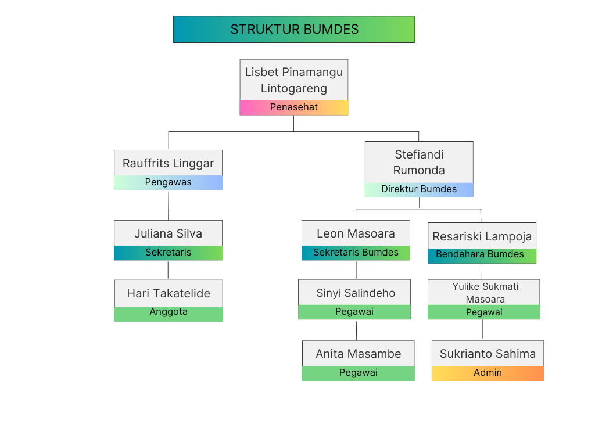

BADAN USAHA MILIK DESA
"SINAR USAHA" DESA BUDO

VISI
Menjadi pendorong tumbuhnya usaha ekonomi dan kesejahteraan masyarakat desa budo yang berkelanjutann dengan menjadikan desa budo sebagai desa wisata
bertaraf internasional centra perdagangan jasa, pertanian dan industri kerakyatan yang kuat menuju masyarakat sejahtera cerdas sehat dan terampil
melalui pengembangan usaha ekonomi peningkatan kapasitas kompetensi sumper daya manusia.
MISI
Mengelola sumber daya alam sebagai kekayaan desa secara mandiri meningkatkan sumber daya manusia melalui pendiidkan dan pelatihan.
Meningkatkan ketahanan ekonomi dengan menggalangkan usaha ekonomi kerakyatan melalui program strategis dibidang produksi pertanian, pemasaran,
dan usaha kecil menengeah umkm serta pariwisata. Meningkatkan kerjasama antara desa, mengembangkan hutan mangrove dan sofenir menjadi wisata
pendidikan alam nasional, menciptakan ruang kerja bagi masyarakat kurang mampu yang ada didesa, membangkitkan kegiatan ekonomi kecil dan menengah
lewat pengembangan berbagai kerajinan industri rumah tangga, meningkatkan pelayanan kepada masyarakat dan meningkatkan kerjasama antara lembaga
pemerintah didesa serta lembaga adat, Fasilitasi kelompok umkm untuk meningkatkan produksi, meningkatkan partisipasi masyarkat dalam pembangunan
yang berkelanjutan, menggali potensi” wisata yang belum dikelola, memasarkan hasil kekayaan desa melalu media online, menciptakan pasar nasional dan
internasional, mengelola dana program yang masuk ke desa bersifat dana bergulir terutama dalam rangka memberantas kemiskinan dan pengembangan usaha
ekonomi pedesaan.
Students
Courses
Events
Trainers